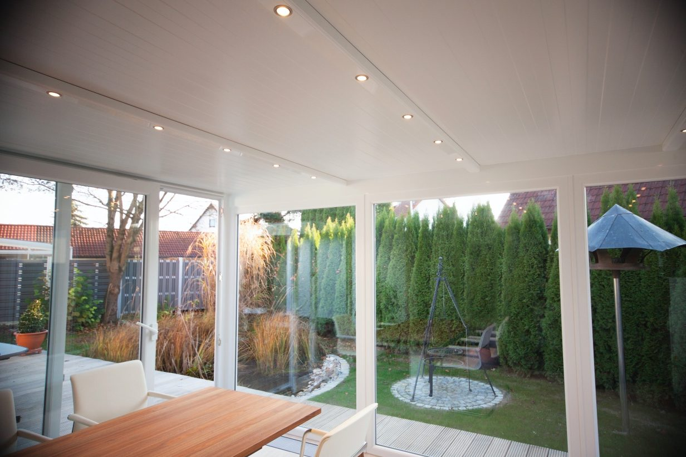
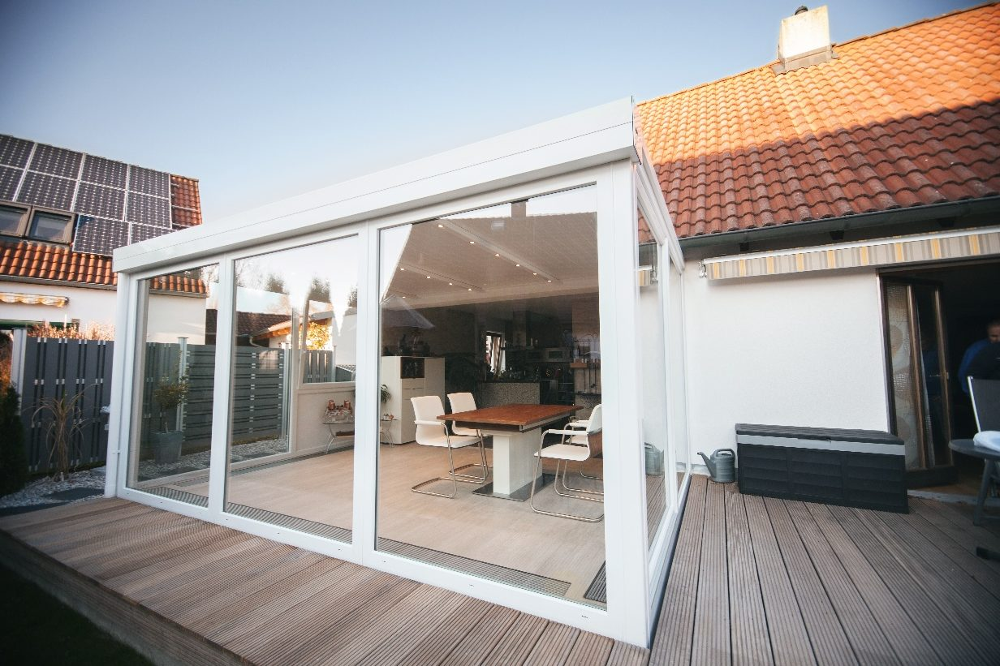
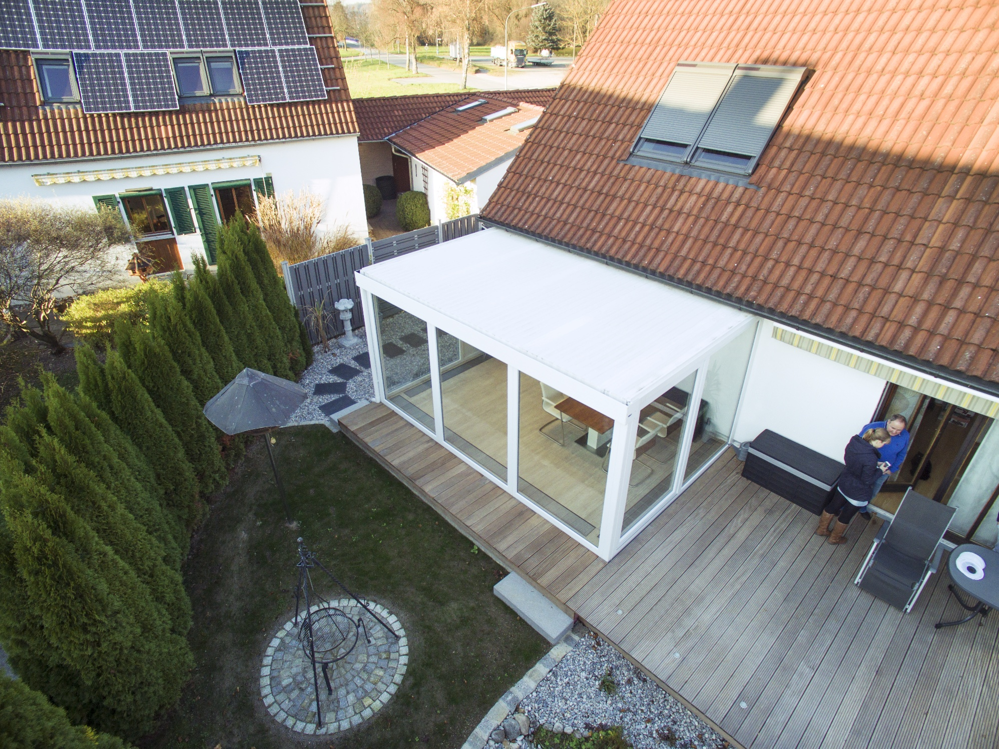
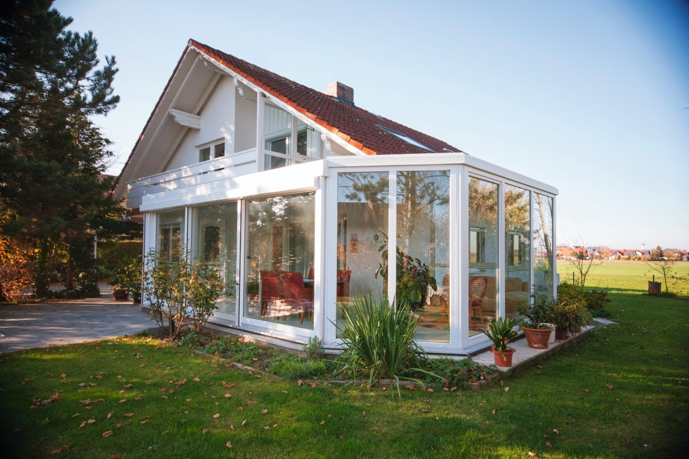
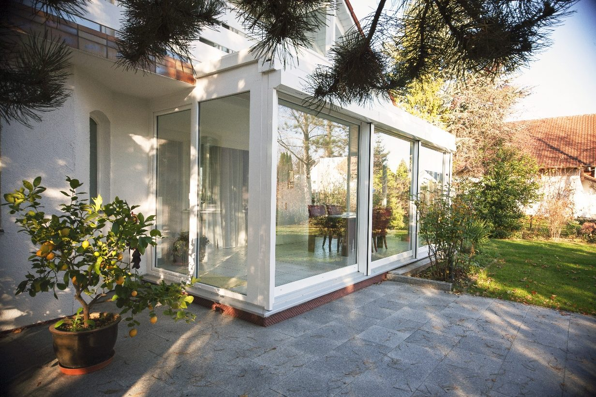
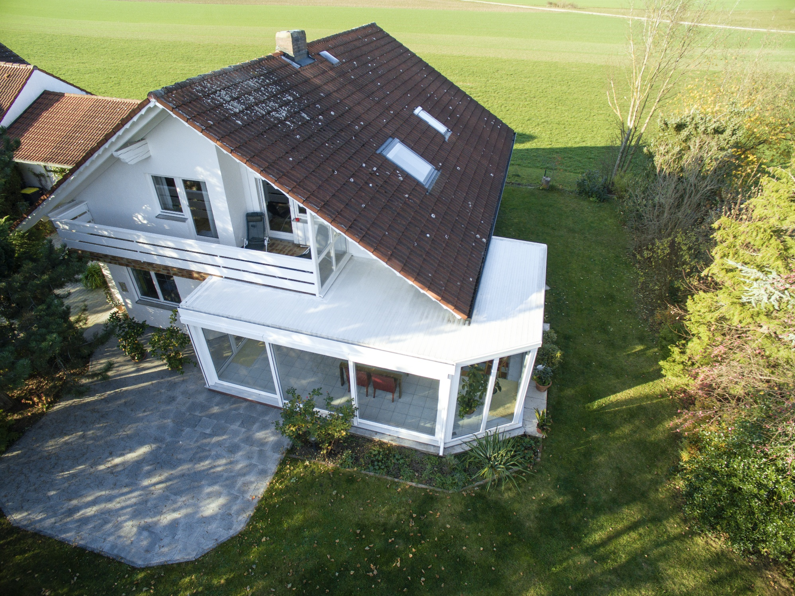
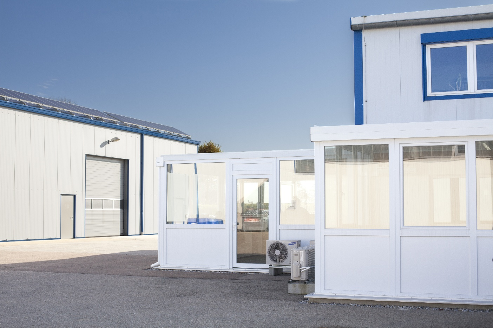
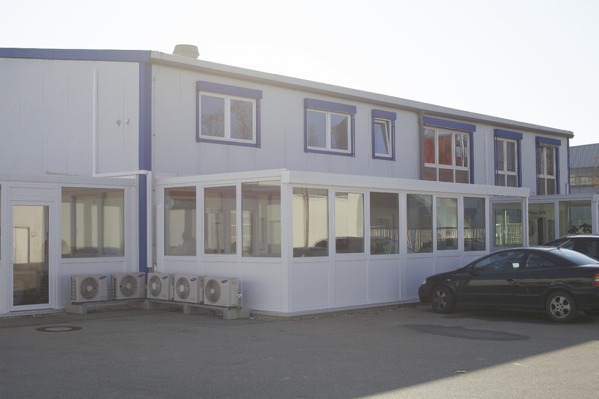
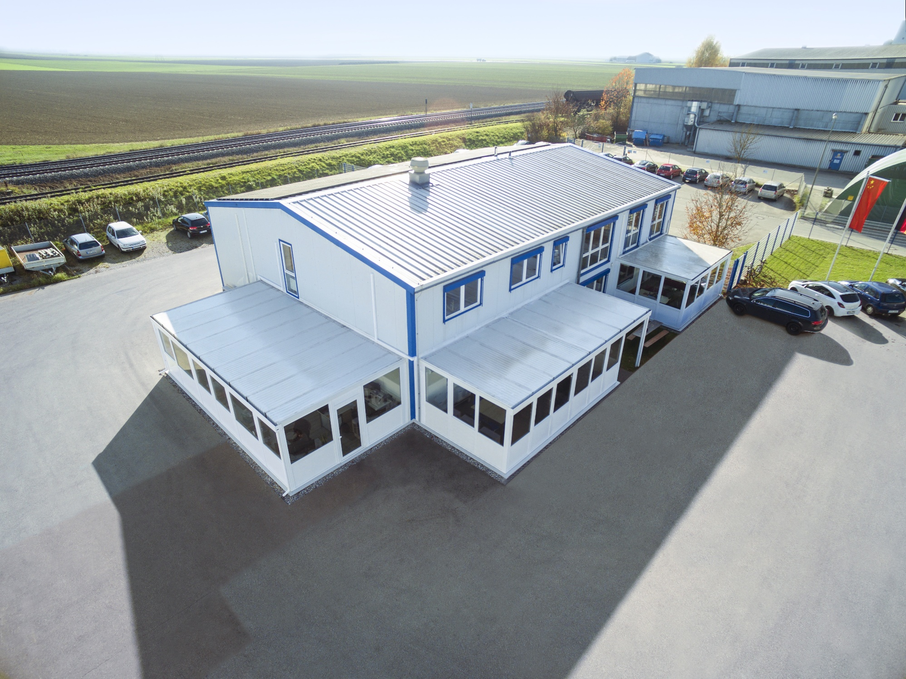

Mit einem Wintergarten der Firma Zwick kann dieser Wohntraum für Sie Wirklichkeit werden.
Wintergarten Glasdach? Nein danke! Das Klimadach von Zwick revolutioniert Ihr Wohngefühl — das ganze Jahr über.
Angenehme Temperaturen auch im Hochsommer.
Spart Kosten, maximales Licht ohne Blendung.
Pflegearm und langlebig konstruiert.
Kombination für maximalen Wohngewinn.









Ja, die Erstberatung ist bei uns kostenlos. Wir nehmen uns gerne die Zeit, um Ihre Wünsche und Anforderungen zu besprechen.
In den meisten Fällen wird ein stabiles Fundament benötigt, um eine sichere und langlebige Konstruktion zu gewährleisten. Details klären wir bei der Beratung.
Die Dauer hängt von Planung, Genehmigungen und Bestellung ab. Typisch sind 8–16 Wochen vom Auftrag bis zur Fertigstellung.
Ja! Auch die Sanierung von Bestands-Wintergärten ist für uns kein Problem. Wir stellen Elemente ein, dichten ab und reparieren.
Wir sind auch für Reparaturen und Einstellarbeiten an Bestandswintergärten da.
Kontaktieren Sie uns für ein unverbindliches Angebot — kostenlose Erstberatung inklusive.
Jetzt anfragen →